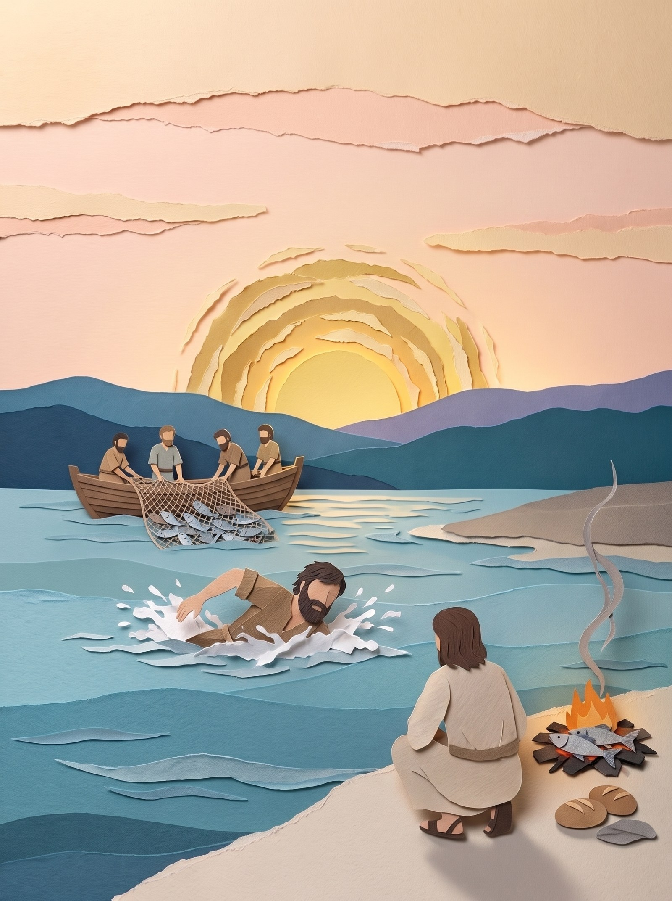

Capítulo 11
La tumba vacía, Emaús y la orilla
Parte II: el cumplimiento, «¿Quién es este?» · Juan 20; Lucas 24; Juan 21
La escena
Recreación: así pudo haber sido. Los hechos están en Juan 20 y 21 y en Lucas 24. Lo que pensaban y sentían se imagina a partir del texto y de lo que se sabe de la época.
Una mujer a oscuras
Es domingo y todavía no amanece. Juan lo dice con tres palabras: «siendo aún oscuro» (Jn 20:1).
María Magdalena camina hacia el sepulcro. Hace dos días vio morir a Jesús. Vio los clavos. Vio cómo bajaban el cuerpo de la cruz. No va a buscar un milagro. Va a llorar cerca de Él, porque es lo único que le queda.
La piedra está quitada. La tumba está vacía. Y lo primero que piensa no es «resucitó». Lo primero que piensa es peor: «se lo llevaron». Corre a avisar a Pedro y a Juan. Ellos llegan, miran y se van. Ella se queda.
Se queda llorando afuera. Alguien le habla y ella cree que es el hortelano. Le ruega que le diga dónde lo puso, que ella misma se lo lleva. Y entonces ese hombre dice una sola palabra. Su nombre.
—¡María!
No hizo falta un sermón. Bastó que la llamara como solo Él la llamaba.
En esa época, la palabra de una mujer no valía ante un tribunal. Y Dios escogió a una mujer para ser la primera en verlo vivo y la primera en anunciarlo. Así mira Dios.
Dos hombres tristes en el camino
Esa misma tarde, dos discípulos salen de Jerusalén rumbo a Emaús, una aldea a unos once kilómetros. Uno se llama Cleofas. Del otro no sabemos ni el nombre.
Caminan despacio, como camina la gente que ya no espera nada. Un desconocido se les une. Ellos no pueden creer que alguien no sepa lo que pasó en Jerusalén.
Entonces el desconocido empieza a explicarles. Desde Moisés. Desde los profetas. El cordero de la Pascua. El siervo herido de Isaías. Jonás, tres días en el vientre del pez. Todo, de principio a fin, hablaba de Él.
Llegan a la aldea y le ruegan que se quede, porque ya es tarde. En la mesa, Él toma el pan, lo bendice y lo parte. En ese momento lo reconocen. Y desaparece.
Ellos se miran y se dicen lo que este libro quiere que tú también sientas: «¿No ardía nuestro corazón en nosotros, mientras nos hablaba en el camino, y cuando nos abría las Escrituras?» (Lc 24:32).
Ya es de noche. No importa. Se levantan y desandan los once kilómetros para contarlo. Once de ida con el alma en el piso. Once de vuelta con el corazón ardiendo.
Un pescador que volvió a sus redes
Pasan unos días. Ahora estamos lejos de Jerusalén, en Galilea, junto al lago donde todo empezó.
Pedro está con otros seis: Tomás, Natanael, Jacobo, Juan y dos discípulos más. De pronto dice: «Voy a pescar». Los demás se van con él.
Esa frase pesa. Unos tres años antes, Pedro dejó las redes en esa misma orilla para seguir a Jesús. Y ahora vuelve al único oficio que conoce. No explica por qué. Tal vez ni él lo sabe.
En Galilea se pescaba de noche. Es trabajo duro: lanzar la red, esperar, recogerla mojada y pesada, volver a lanzarla. El frío en los brazos. La madera de la barca crujiendo en la oscuridad. Y toda la noche, nada. Ni un pez.
Su lucha. En esa barca, Pedro tiene tiempo de sobra para pensar. Piensa en la cena de la Pascua, cuando prometió delante de todos que, aunque tuviera que morir con Jesús, jamás lo iba a negar. Piensa en el patio del sumo sacerdote. En el fuego de brasas donde se calentaba las manos junto a los mismos hombres que habían arrestado a su Maestro. Una criada le preguntó si él también era de los discípulos de ese hombre. «No lo soy». Lo volvió a negar. Y una tercera vez. Y el gallo cantó.
Pedro sabe que Jesús resucitó. Ya lo vio. Pero entre los dos queda algo sin hablar: la vergüenza de mirar a los ojos a quien le fallaste justo cuando más te necesitaba. Pedro ya no sabe si todavía tiene un lugar en esta historia, o si ahora es solo un pescador más, un hombre que prometió demasiado.
Empieza a clarear. En la orilla, a unos noventa metros, hay un hombre de pie. Les grita:
—Hijitos, ¿tienen algo de comer?
—No.
—Echen la red a la derecha de la barca, y encontrarán.
Lo intentan una vez más. Y la red se llena tanto que no la pueden subir.
Pedro conoce esa escena. La vivió el día en que conoció a Jesús.
Juan es el primero en entender. Se acerca a Pedro y le dice: «¡Es el Señor!».
Y Pedro hace lo que solo Pedro haría. No espera a que la barca llegue. Se pone la ropa, se la ciñe y se lanza al agua. Nada hacia la orilla con todo lo que lleva dentro: la culpa, el miedo y el amor. Sobre todo el amor.
La primera vez que vio una pesca así, cayó de rodillas y le dijo: «Apártate de mí, Señor, porque soy hombre pecador» (Lc 5:8). Esta vez, después del peor error de su vida, no le pide que se aparte. Va hacia Él.
Sale del agua empapado. Y lo huele antes de verlo: humo de carbón. En la arena hay unas brasas encendidas, un pescado encima y pan. Jesús les cocinó el desayuno.
El último fuego de brasas que vio Pedro fue el del patio, la noche en que lo negó. Ahora hay otras brasas. Y junto a ellas está Jesús.
—Vengan a comer.
Nadie se atreve a preguntarle quién es. Todos lo saben.
El Creador del universo, el que hizo ese lago y cada pez que nada en él, está junto a unas brasas, sirviéndoles pan y pescado a unos pescadores cansados. Uno de ellos lo había negado.
Cuando terminan de comer, Jesús se dirige a Pedro. No le dice «te lo advertí». No le pide explicaciones. Le hace una pregunta:
—Simón, hijo de Jonás, ¿me amas?
—Sí, Señor; tú sabes que te amo.
Una segunda vez, la misma pregunta. La misma respuesta.
Y una tercera vez. Ahí Pedro se entristece. Él sabe muy bien por qué son tres. Por cada negación, un «¿me amas?». Y con el corazón abierto le responde que Él lo sabe todo, que sabe que lo ama.
Jesús no le da un discurso sobre el perdón. Hace algo más grande: le confía lo que más quiere. «Apacienta mis ovejas». Cuida de mi gente. El hombre que lo negó junto a un fuego recibe el encargo de cuidar a los suyos junto a otro fuego.
Así perdona Dios. No solo borra lo que hiciste. Te vuelve a buscar, te sienta a su mesa y te pone a cuidar a otros.

La historia según la Biblia
Reina-Valera 1960
En el sepulcro, la madrugada del domingo
«Jesús le dijo: ¡María! Volviéndose ella, le dijo: ¡Raboni! (que quiere decir, Maestro).» — Juan 20:16
En el camino a Emaús, esa misma tarde
«Y comenzando desde Moisés, y siguiendo por todos los profetas, les declaraba en todas las Escrituras lo que de él decían.» — Lucas 24:27
En el lago, días después
«Entonces aquel discípulo a quien Jesús amaba dijo a Pedro: ¡Es el Señor! Simón Pedro, cuando oyó que era el Señor, se ciñó la ropa (porque se había despojado de ella), y se echó al mar.» — Juan 21:7
«Al descender a tierra, vieron brasas puestas, y un pez encima de ellas, y pan.» — Juan 21:9
«Le dijo la tercera vez: Simón, hijo de Jonás, ¿me amas? Pedro se entristeció de que le dijese la tercera vez: ¿Me amas? y le respondió: Señor, tú lo sabes todo; tú sabes que te amo. Jesús le dijo: Apacienta mis ovejas.» — Juan 21:17
Dos escenas que se repiten
Juan cuenta la orilla para que la recuerdes junto a otras dos escenas: la primera pesca (Lucas 5) y el patio donde Pedro negó a Jesús (Juan 18). No es casualidad. Jesús volvió a empezar con Pedro desde el mismo punto.
La primera pesca y la última
| Lucas 5 (el comienzo) | Juan 21 (después de la resurrección) |
|---|---|
| Toda la noche trabajaron y no pescaron nada (Lc 5:5) | Esa noche tampoco pescaron nada (Jn 21:3) |
| Jesús les dice dónde echar las redes (Lc 5:4) | Jesús les dice que echen la red a la derecha (Jn 21:6) |
| La red se rompía de tantos peces (Lc 5:6) | Ciento cincuenta y tres peces, «y aun siendo tantos, la red no se rompió» (Jn 21:11) |
| Pedro: «Apártate de mí, Señor, porque soy hombre pecador» (Lc 5:8) | Pedro, que acaba de fallar, se lanza al agua para llegar a Él (Jn 21:7) |
| Jesús lo llama a pescar hombres (Lc 5:10) | «Apacienta mis ovejas» (Jn 21:17) |
El fuego de la caída y el fuego del perdón
| Juan 18 (el patio) | Juan 21 (la orilla) |
|---|---|
| Un fuego; Pedro está «en pie, calentándose» (Jn 18:18) | «Brasas puestas, y un pez encima de ellas, y pan» (Jn 21:9) |
| Tres negaciones: «No lo soy» (Jn 18:17; ver 18:25-27) | Tres respuestas: «Tú sabes que te amo» (Jn 21:15-17) |
| Pedro se calienta junto a los que arrestaron a Jesús | Jesús le prepara el desayuno a Pedro |
La palabra griega que Juan usa para ese fuego de brasas es anthrakiá. En todo el Nuevo Testamento aparece solo dos veces: en el patio donde Pedro negó a Jesús (Jn 18:18) y en la orilla donde fue restaurado (Jn 21:9).
La sombra de Jesús
El Cordero está vivo. Este libro ha seguido a un cordero desde el monte Moriah y desde la noche de la Pascua en Egipto. Juan el Bautista lo señaló en el Jordán. En el capítulo anterior lo vimos morir en la Pascua. Y aquí está lo que nadie esperaba: el Cordero no se quedó en la tumba. El que murió por los pecados es el mismo que parte el pan en Emaús y asa pescado en la orilla.
El perdón tiene rostro. Durante siglos, el perdón pasaba por el templo: un sacrificio tras otro, año tras año. En el capítulo 9 la gente se escandalizaba de que Jesús perdonara pecados, porque eso solo lo hace Dios. En la orilla, Jesús perdona sin templo y sin sacrificio, porque el sacrificio ya fue Él.
Pedro no salió de esa playa solo perdonado. Salió limpio y con un encargo. Dios no te perdona para que vivas mirando atrás. Te perdona para que mires a los demás como Él te mira a ti.
Nota del autor
PROPUESTA · para revisión de Byron
Me hizo llorar cuando Pedro volvió a ver a Jesús después de haber fallado, y se lanzó al agua, repitiendo la misma historia del principio, cuando lo conoció.
Es demasiado emocionante cómo Jesús fue a verlos, y a hacer lo mismo que al principio. No sé cómo explicarlo. Los atendió, les dio de comer. Y con la autoridad del Creador del universo (les lavó los pies), les pidió que lo siguieran y cuiden de la gente, como quien nos lo dice a nosotros.
Perdonados, limpios, miremos a otros como Dios los ve: con amor, con compasión, con paciencia.
Al final, hombres y mujeres somos iguales ante Dios, y Él nos ha perdonado a todos.
Para seguir leyendo
- Juan 20 y 21: la tumba vacía, María Magdalena, Tomás y la orilla.
- Lucas 24: las mujeres en el sepulcro y el camino a Emaús.
- 1 Corintios 15:3-8: la lista más antigua de los que vieron a Jesús resucitado.
- Hechos 2: el mismo Pedro que negó a Jesús predica ante miles en Jerusalén.